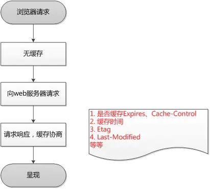
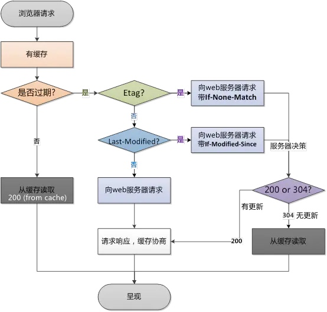

HTTP 代理服务器是 Web 安全、应用集成以及性能优化的重要组成模块。代理位于客户端和服务器端之间，接收客户端所有的 HTTP 请求，并将这些请求转发给服务器（可能会对请求进行修改之后再进行转发）。对用户来说，这些应用程序就是一个代理，代表用户访问服务器。
出于安全考虑，通常会将代理作为转发所有 Web 流量的可信任中间节点使用。代理还可以对请求和响应进行过滤，安全上网或绿色上网。
缓存
浏览器第一次请求：
浏览器第一次请求
浏览器再次请求： 浏览器再次请求
Web 缓存或代理缓存是一种特殊的 HTTP 代理服务器，可以将经过代理传输的常用文档复制保存起来。下一个请求同一文档的客户端就可以享受缓存的私有副本所提供的服务了。客户端从附近的缓存下载文档会比从远程 Web 服务器下载快得多。